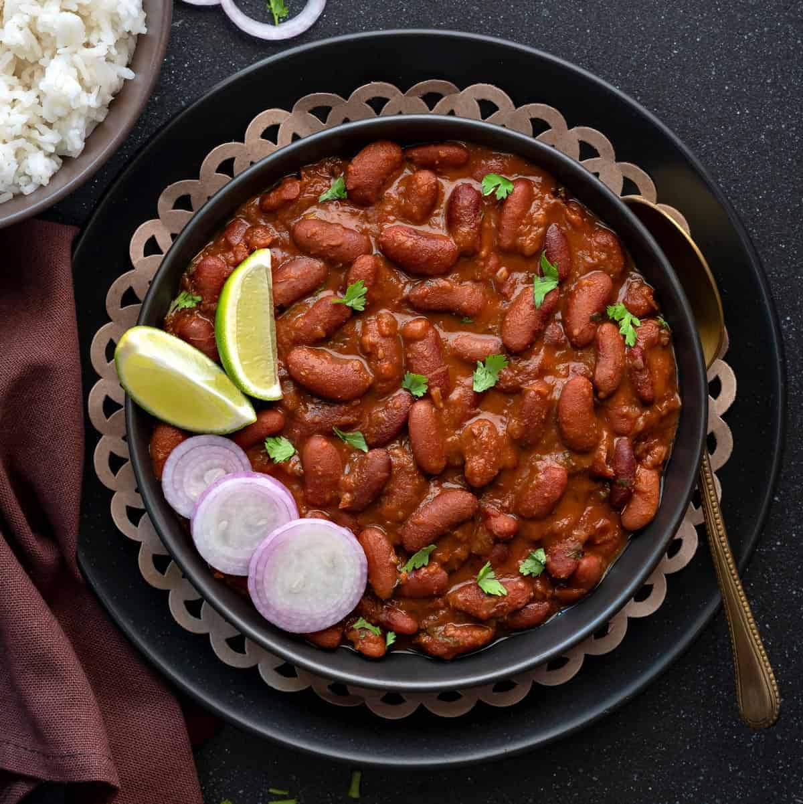

home
RAJMA

Description
A delicious North Indian kidney bean curry served with rice.
Ingredients
- 1 cup rajma (kidney beans), soaked overnight
- 2 onions, finely chopped
- 2 tomatoes, pureed
- 1 tbsp ginger-garlic paste
- 1 tsp cumin seeds
- 1 tbsp rajma masala
- 1/2 tsp turmeric powder
- 1 tsp red chili powder
- 2 tbsp oil
- Salt to taste
- Fresh coriander for garnish
Steps
- Pressure cook soaked rajma until soft
- Heat oil in a pan, add cumin seeds
- Add onions and sauté until golden
- Add ginger-garlic paste and sauté
- Add tomato puree and cook until oil separates
- Add all spices and mix well
- Add cooked rajma with some water
- Simmer for 15-20 minutes
- Garnish with fresh coriander